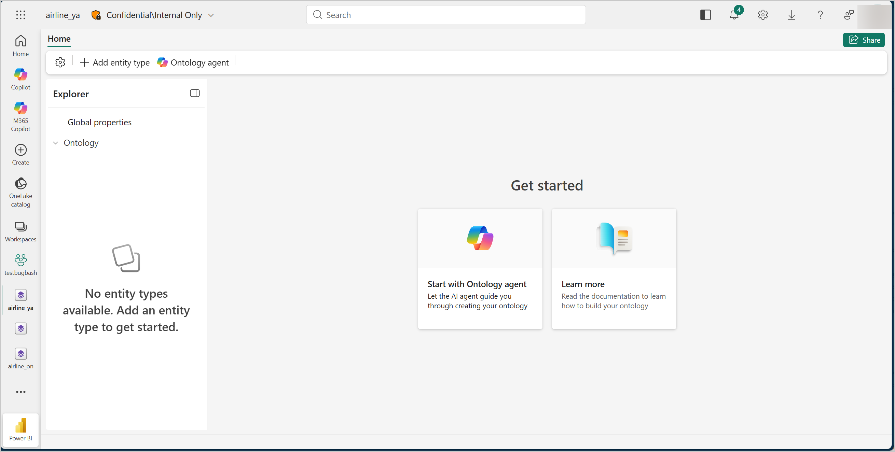
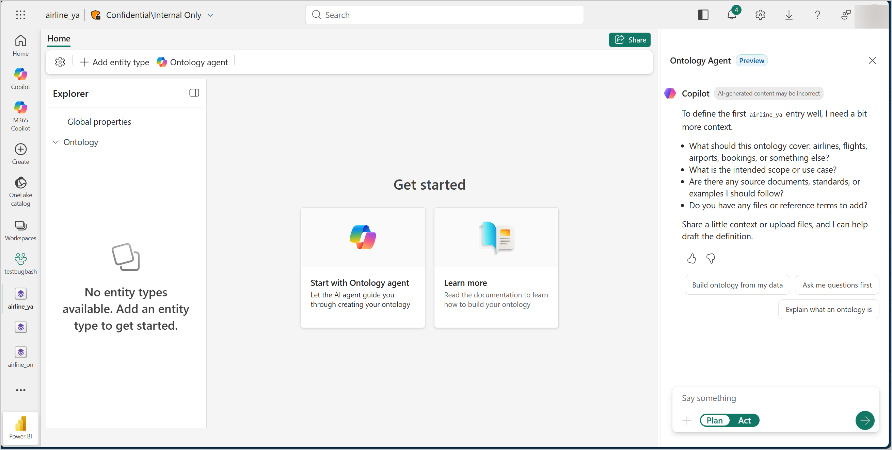
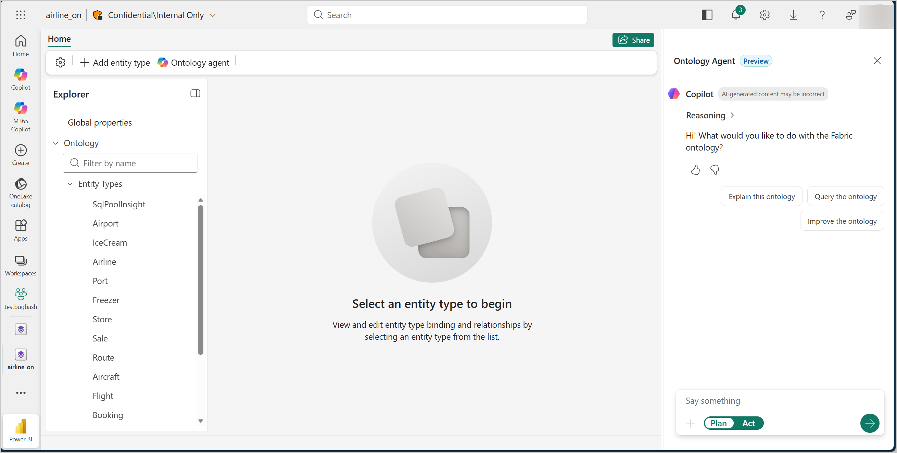

Ontology agent (preview) PREVIEW
The Microsoft Fabric ontology agent is an AI-powered Copilot that helps you build and operate ontologies over the data in your Microsoft Fabric workspace by using a chat interface and natural language. The agent helps you:
- Create an ontology: a guided, end-to-end flow that takes you from an empty ontology item to a published definition grounded in your workspace data.
- Operate your ontology: once a definition exists, the agent can describe it, query the data behind it by using Kusto Query Language (KQL), SQL, or Graph Query Language (GQL), and improve it as your sources evolve.
You interact with the agent inside the Fabric ontology item. The agent explains what it's doing, asks for clarification when it needs it, and previews every change before it applies anything to your ontology.
The Microsoft Fabric ontology agent is currently in preview. See the Supplemental Terms of Use for Microsoft Azure Previews for legal terms that apply to features in beta, preview, or otherwise not yet released into general availability.
What is an ontology?
An ontology is a structured model that defines the entities in a data domain (such as devices, sensors, buildings, flights, or customers), together with their properties and the relationships between them. In Microsoft Fabric, an ontology sits on top of your raw data assets and adds:
- Entity types: named categories with typed properties and unique identity keys.
- Relationships: directed connections between entity types.
- Data bindings: mappings that ground each entity type in a concrete source table and link ontology properties to source columns.
- Contextualizations: join-key definitions that ground relationships in real data, so you can traverse from one entity to another by using shared keys.
This structure enables relationship-aware querying and graph traversals that aren't possible against flat tabular data alone. For a deeper introduction to the ontology item itself, see What is ontology (preview)?.
Create an ontology
A new ontology item starts empty. The first time you open it, the canvas shows a Get started page with two options: Start with Ontology agent (recommended) and Learn more.

Selecting Start with Ontology agent opens the chat panel on the right of the canvas. The agent introduces itself and asks a few clarifying questions to scope the work, such as what the ontology should cover and which sources to prioritize. To make it easier to get going, the agent also offers a few one-click suggestions above the input box. For example, you can jump straight into discovery, walk through the clarification dialogue first, or get an explanation of ontology concepts. The agent generates the suggestions and adapts them to the ontology and the conversation, so the exact wording and which suggestions appear can vary. You can pick a suggestion or type your own message at any time.

From there, the agent walks you through the rest of the creation flow:
- Discover: explores the workspace items you point it to (or that it discovers automatically) and samples a few rows per table.
- Draft: proposes an ontology definition (entity types, relationships, data bindings, and contextualizations) grounded in the discovered evidence.
- Validate: runs structural and grounding checks on the draft and shows the results, including any warnings or errors.
- Apply: once you switch the agent to Act mode, writes the definition to the ontology item and publishes it.
When you publish the first definition, the canvas replaces the Get started page with the Explorer (the list of entity types) and the relationship graph. You continue working with the agent on day-to-day tasks.
Operate your ontology
Once your ontology has a definition, open the ontology item any time and select Ontology agent on the toolbar to bring up the chat panel. The agent greets you and offers a few one-click suggestions that adapt to the current ontology. For example, you can ask the agent to explain the ontology, query the data behind it, or propose improvements. The agent generates the suggestions and they can vary across conversations. You can pick a suggestion or type your own question in the Say something box.

The day-to-day capabilities the agent supports are described in the following section.
Explain the ontology
Ask the agent to walk you through the current ontology. It reads the definition, summarizes the entity types and relationships, and explains how they're grounded in your workspace data. Use this explanation when you're new to an ontology or when you inherit one from a teammate.
Query the ontology
Ask questions over the data behind the ontology in plain language. The agent picks the right engine for each question based on the bindings: KQL for entity types bound to Eventhouse tables, SQL for entity types bound to Lakehouse tables, and GQL for relationship traversals when a GraphModel exists for the ontology. The agent shows you the query it ran, the results (bounded to 100 rows by default; ask for more in the chat), and a short explanation. When a query returns no rows, the agent says so explicitly; it never invents data.
Improve the ontology
Ask the agent to evolve the definition as your sources change: new tables, new columns, schema drift, or new relationships you want to model. The agent proposes a patch that shows changed and stable items side by side, runs validation, and previews the change before anything is applied. Patches preserve stable identifiers (IDs), so downstream queries and integrations keep working. As with the creation flow, the agent applies the patch only after you switch to Act mode.
Plan mode and Act mode
The agent has two interaction modes, controlled by a toggle at the bottom of the chat input:
- Plan mode (default): the agent can discover, draft, validate, query, explain, and preview, but it doesn't make any changes to your ontology or your workspace. Use this mode to explore and review proposals.
- Act mode: the agent can apply ontology changes. It always tells you what it's about to do before it does.
Plan mode is the safe default. Switch to Act mode only when you're ready to let the agent make changes.
Preview the draft in the ontology canvas
The chat is the primary surface for working with the agent, but you don't have to read every change in the transcript. When the agent finishes building or revising a draft in Plan mode, it posts a preview action in its chat response. Selecting that action opens a read-only draft preview of the entire proposed ontology in the canvas, including entity types, properties, data bindings, relationships, and contextualizations. The preview works in both flows:
- When you're creating a new ontology: the canvas shows the full proposed structure before anything is applied. You can browse entity types and the relationship graph just like you would for a published ontology.
- When you're improving an existing ontology: the canvas highlights what changed. Added, edited, and removed items carry visual indicators, and each changed item shows a short explanation of what changed and why. Removed items still appear in the preview so you can confirm the deletions before they happen.
The preview is read-only. To adjust anything, ask the agent in the chat; the agent produces a revised draft and posts a new preview action you can open. When you switch to Act mode and the agent applies, the preview becomes the published ontology definition.
Work with the ontology agent
The agent provides a conversational experience for building and operating your ontology. You interact through chat to ask questions, share context, and review proposals in an iterative, flexible way.
As the agent works, it explains its reasoning: which workspace items it inspected, which tables it sampled, which validation rules it ran, and which evidence it relied on. This transparency helps you understand not only what the agent proposes, but why.
The conversation continues as your understanding evolves. You can ask follow-up questions to dig deeper, refine a proposal, focus on a specific source, or explore a related angle while keeping the full context of the conversation.
Conversation lifetime
A conversation is tied to a specific Fabric ontology item, and the agent keeps context across turns within that session. During preview, conversation state lives only in your current browser session: refreshing the page or closing the tab ends the conversation, and the next time you open the agent it starts fresh. Conversations also can't continue beyond 24 hours.
Data retention
To support service operation, troubleshooting, and quality, the service might retain conversation data for up to two days after a conversation ends. Microsoft processes this data according to its privacy, security, and compliance policies, and doesn't use it for other purposes. Microsoft doesn't use conversation data to train foundation models. For details, see the Governance, privacy, and AI model FAQ.
What the agent can access
The agent uses your identity (delegated access) when it reads or writes data in your Fabric workspace. That means the agent can only see and change what you can see and change. The agent operates within your existing Microsoft Entra ID and Fabric role-based access control (RBAC). For details, see the Governance, privacy, and AI model FAQ.
Supported data sources
| Source type | What the agent does with it |
|---|---|
| Lakehouse | Discovers tables and columns; samples rows; binds entity types to Lakehouse tables; executes SQL queries. |
| Eventhouse | Discovers databases, tables, and columns; samples rows; binds entity types to KQL tables (including time-series bindings); executes KQL queries. |
| Semantic model | Reads measures, tables, and relationships through XML for Analysis (XMLA) for business-context grounding. The agent doesn't bind ontology entities directly to semantic models. |
| GraphModel | Executes ISO GQL queries for relationship and traversal questions, when a GraphModel exists for the ontology. |
Regions
The Fabric ontology agent is available in some of the Microsoft Fabric regions where the ontology item type is supported.
Some processing happens in geographically scoped Microsoft-managed environments rather than per region. For EU-based customers, processing and storage stay within the EU, in alignment with Microsoft's EU Data Boundary commitments.
Current limitations
Keep in mind these general limitations during preview:
- Each conversation operates on a single ontology in a single workspace. The agent can't span multiple ontologies in one conversation.
- Customer-managed keys (CMK) aren't supported for ontology agent conversation data at this time. Data is encrypted by using Microsoft-managed keys, in alignment with Fabric data protection standards.
- Applying ontology changes adds or updates items in place. There's no built-in rollback; to restore an earlier definition, reapply it.
Responsible AI
The Microsoft Fabric ontology agent is designed and operated in alignment with Microsoft's Responsible AI principles. For more information, see the Responsible AI FAQ for the Fabric ontology agent.
Related content
- What is ontology (preview)?: background on the Fabric ontology item the agent works with.
- Best practices for the Fabric ontology agent: prepare your workspace and sources so the agent can do its best work.
- Governance, privacy, and AI model FAQ: data handling, residency, and compliance.
- Responsible AI FAQ: how the agent is designed and what to expect.
- Troubleshooting: common problems and fixes.
- Billing and cost management: how the agent is billed.